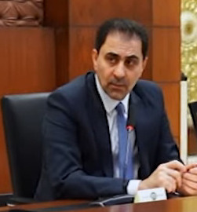

محسن علي أكبر المندلاوي
رجل أعمال عراقي ونائب في مجلس النواب العراقي. نائب أول لرئيس مجلس النواب العراقي منذ 29 أيلول 2022، ورئيس ائتلاف الأساس العراقي. حاصل على شهادة بكالوريوس إعلام من جامعة الفراهيدي. يشغل أيضاً منصب رئيس مجلس إدارة المستشفى العالمي للجراحات التخصصية ورئيس مجلس إدارة جامعة الفراهيدي.
المؤهل العلمي:
- بكالوريوس إعلام - جامعة الفراهيدي
الخبرات العملية:
- رئيس مجلس إدارة المستشفى العالمي للجراحات التخصصية
- رئيس مجلس إدارة جامعة الفراهيدي
- عضو مجلس النواب العراقي
- نائب أول لرئيس مجلس النواب العراقي
الإنجازات:
- تأسيس ائتلاف الأساس العراقي
- المساهمة في تطوير التعليم والصحة في العراق
المهارات:
- إدارة المشاريع
- القيادة السياسية
- التفاوض وصنع القرار
العودة للرئيسية